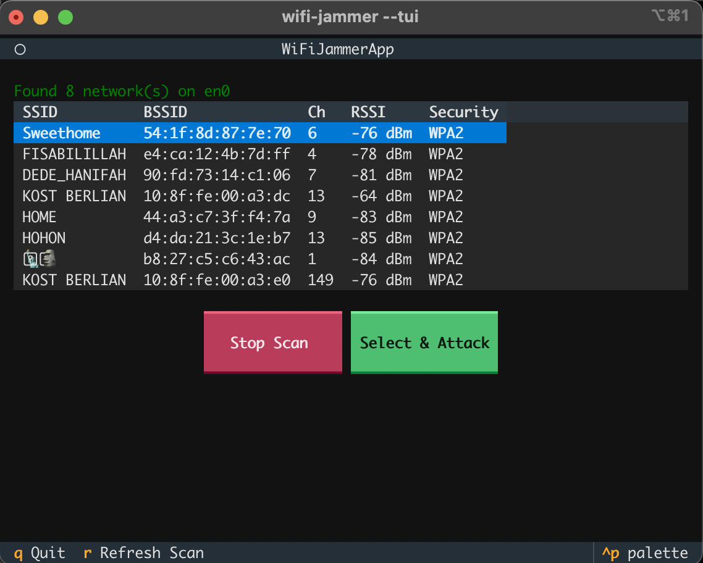
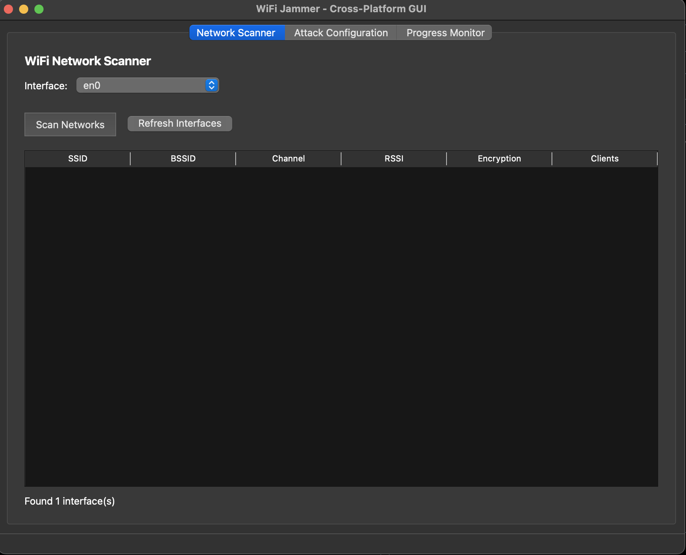

WiFi Jammer Demo
See WiFi Jammer in action with both Text User Interface (TUI) and Graphical User Interface (GUI) demonstrations.
Text User Interface (TUI)
The TUI provides a modern, interactive terminal experience built with the Textual framework. It offers a clean, responsive interface for network scanning and attack configuration.

WiFi Jammer TUI - Network Scanner View
Key Features
- Network Scanning: Real-time network discovery with detailed information
- Interactive Selection: Navigate through discovered networks using keyboard
- Attack Configuration: Select and configure attacks directly from the interface
- Real-time Progress: Monitor attack progress with live statistics
- Dark Theme: Easy on the eyes with a modern dark color scheme
- Responsive Layout: Adapts to different terminal sizes
How to Launch TUI
# Using wrapper script
sudo ./wifi-jammer.sh attack --tui
# Using installed command
sudo wifi-jammer attack --tui
# Or directly
sudo wifi-jammer --tuiTUI Interface Overview
The TUI interface displays:
- Network Table: Shows SSID, BSSID, Channel, RSSI, and Security information
- Status Bar: Displays current scan status and interface information
- Action Buttons: Stop Scan, Select & Attack buttons for quick actions
- Keybinds Footer: Shows available keyboard shortcuts (q to quit, r to refresh)
Navigation
| Key | Action |
|---|---|
↑ / ↓ |
Navigate through network list |
Enter |
Select network or activate button |
q |
Quit application |
r |
Refresh scan |
^p |
Open palette (theme customization) |
Tip: The TUI automatically detects available wireless interfaces and allows you to select one before scanning.
Graphical User Interface (GUI)
The GUI provides a modern, cross-platform graphical interface built with PyQt6. It offers an intuitive way to scan networks, configure attacks, and monitor progress.

WiFi Jammer GUI - Network Scanner Tab
Key Features
- Tabbed Interface: Organized into Network Scanner, Attack Configuration, and Progress Monitor
- Network Discovery: Visual network scanning with detailed information
- Interface Selection: Dropdown menu to select wireless interfaces
- Attack Configuration: Visual form to configure attack parameters
- Progress Monitoring: Real-time attack progress and statistics
- Cross-Platform: Works on Windows, macOS, and Linux
How to Launch GUI
# Using wrapper script
sudo ./wifi-jammer.sh attack --gui
# Using installed command
sudo wifi-jammer --gui
sudo wifi-jammer-gui
# Or directly via Python module
sudo ./venv/bin/python3 -m wifi_jammer.guiGUI Tabs Overview
1. Network Scanner Tab
The Network Scanner tab allows you to:
- Select wireless interface from dropdown
- Scan for available networks
- View network details in a table (SSID, BSSID, Channel, RSSI, Encryption, Clients)
- Refresh interface list
2. Attack Configuration Tab
The Attack Configuration tab provides:
- Attack type selection (deauth, disassoc, beacon_flood, etc.)
- Target network selection
- Interface selection
- Channel configuration
- Packet count and delay settings
- Start/Stop attack controls
3. Progress Monitor Tab
The Progress Monitor tab displays:
- Real-time attack statistics
- Packets sent/failed counts
- Success rate percentage
- Packets per second rate
- Attack duration
- Error messages and warnings
Note: The GUI requires PyQt6 to be installed. If it's not available, you'll see an error message with installation instructions.
GUI Workflow
- Launch GUI: Run
sudo wifi-jammer --gui - Select Interface: Choose your wireless interface from the dropdown
- Scan Networks: Click "Scan Networks" to discover available WiFi networks
- Configure Attack: Switch to Attack Configuration tab and set up your attack
- Monitor Progress: Use Progress Monitor tab to watch attack statistics in real-time
Comparison: TUI vs GUI
| Feature | TUI | GUI |
|---|---|---|
| Platform Support | All platforms with terminal | Windows, macOS, Linux |
| Resource Usage | Low (text-based) | Medium (graphical) |
| Remote Access | Excellent (SSH compatible) | Limited (requires X11 forwarding) |
| User Experience | Keyboard-driven, fast | Mouse-driven, intuitive |
| Dependencies | textual | PyQt6 |
| Best For | Terminal users, remote access | Desktop users, visual learners |
Getting Started
Ready to try WiFi Jammer? Here's how to get started:
- Install WiFi Jammer following the installation guide
- Choose your preferred interface (TUI or GUI)
- Launch with appropriate command (see above)
- Scan for networks and select a target
- Configure and launch your attack
⚠️ Legal Reminder: Only use WiFi Jammer on networks you own or have explicit permission to test. Unauthorized access to networks is illegal.